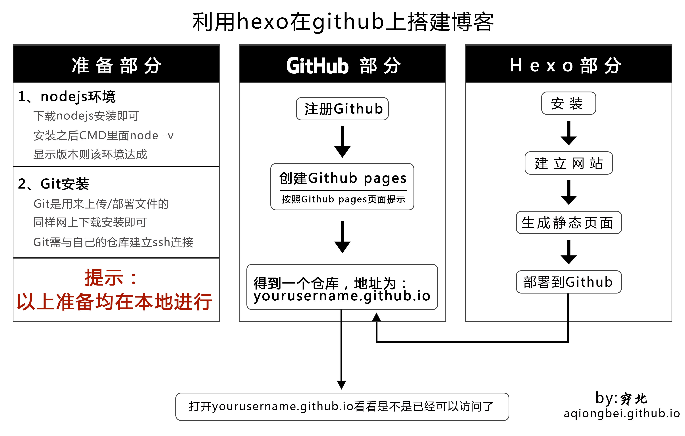

我的blog搭建完成了，中间也是很多曲折的，从不了解github，不知道hexo，不熟悉MarkDown语法，到成功完成自己的blog也是感触颇多。虽然网上这类教程还是挺多的，每篇都写的很详细，但是对于一个小白来说，还是觉得有很多地方跳跃性太大,不容易操作。所以我觉得有必要写这样的一篇教程。以此来帮助更多人。
我觉得你打算做这些之前先看下面的图，这些图是我自己总结出来的，有些地方可能不够准确，但对小白来讲我相信还是有帮助的，对于加深对接下里要做的事的理解还是有帮助的，更利于在某个环节出现了问题时解决问题。

声明：
准备部分软件安装就不赘述了。直接从Git配置ssh开始
Git连接ssh
由于我们没有进行过ssh连接配置，所以省去检查有没有ssh连接配置这一步，直接开始配置ssh
打开Git Bash
设置Git的user name和email：
|
|
生成SSH密钥：
生存密钥：
返回提示如下：
然后会提示，不用理，直接按回车，一共三次。
在C:\Users\Neckpain\.ssh得到 id_rsa 和 id_rsa.pub 文件，说明生成成功
添加密钥到 Github
打开 Github，登录自己的账号后
点击自己的头像->settings->SSH Keys->Add SSH key
将本地 id_rsa.pub 中的内容粘贴到 Key 文本框中，随意输入一个 title，点击 Add Key 即可。
测试
Git里面继续输入
返回
则说明验证成功。
然后开始安装Hexo
安装hexo
以下部分在你想在本地搭建博客的文件夹内进行(我这里是myBlog)。
安装hexo
进入文件夹之后右键选择Git bash here，在打开的Git窗口输入
新建一个网站
安装 Hexo 完成后，在文件夹内执行下列命令，Hexo 将会在指定文件夹中新建所需要的文件。
新建完成后，指定文件夹的目录如下：
安装依赖包：
一段代码滚动之后输入
生成静态页面
|
|
会出现类似以下反馈
都是以info开头的信息，是不会出现什么错误的，所以这个地方方不用担心。
启动本地服务器
|
|
出现下面的情况时
表明服务器启动成功，这时候打开http://localhost:4000/即可看到你的博客。这只是本地的blog，还需要部署到Github。
部署到Github
部署仅需一条命令。但是得做些准备。
修改_config.yml文件
注意：_config.yml文件每个冒号后面空一格才能填值
_config.yml文件在blog文件夹的根目录下。
打开，然后找到这些字段
然后修改这些字段类似这样（没有的字段就添加）：
安装 hexo-deployer-git
|
|
部署
我有强迫症每次部署之前先clean一下
git里面返回类似下面的信息的话就部署成功了
类似是指大部分信息是以INFO开头的。而且最后一条是
这样表示部署成功了。而有时候会出现这样的
这种显示大量信息的八成就是出错了。看到FATAL、error就表明呵呵了。建议关掉本地预览页面(http://localhost:4000/) （我也不懂为什么，但是这样做有时候确实有效），然后hexo clean一下，重新生成静态文件，再次部署。
部署成功之后，打开yourusername.github.io看看是否已经有blog了？
enjoy it！
参考资料：